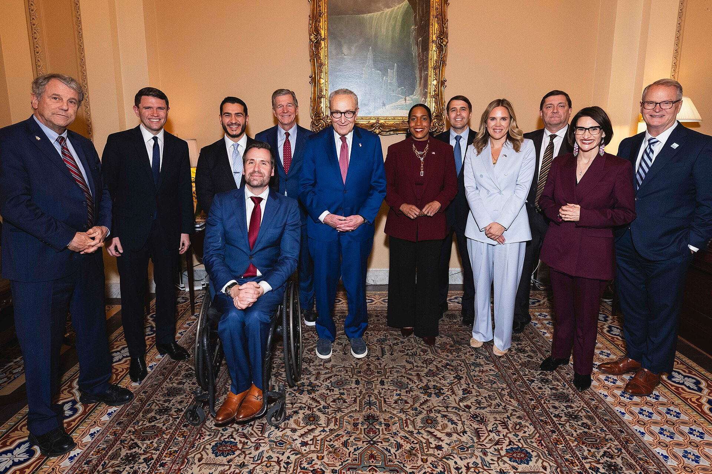

2026 United States Senate election in Iowa2026 年艾奥瓦州联邦参议员选举
Josh Turek (Dem) vs Ashley Hinson (Rep) · election day 2026-11-03
401 CSV rows111 sources 34 eventsEN + 中文
研究切入点 / Research hook. 残奥运动员的公共身份与职业政治人物形象的对照。 A Paralympic athlete's public identity versus a professional politician's image.
This is a question the archive is meant to inform, not a finding. The
repository-level note 2026-image-and-message-notes.md records what the evidence can and cannot support.
401CSV 行数 / rows
111来源 / sources
34活动 / events
7结果行 / results
11民调 / polls
12图像 / images
候选人 / Candidates
大选结果 / General result
| Race | Candidate | Party | Votes | % | Winner |
|---|---|---|---|---|---|
| 2026 United States Senate election in Iowa | Josh Turek | Democratic | 688,746 | 50.56 | yes |
| 2026 United States Senate election in Iowa | Ashley Hinson | Republican | 631,482 | 46.35 | no |
| 2026 United States Senate election in Iowa | Thomas Laehn | Libertarian | 42,109 | 3.09 | no |
图像 / Images

档案分区 / Datasets
选举结果
Election results
7 rows
民调
Polling
11 rows
县级结果
County results
99 rows
竞选活动
Campaign events
34 rows
政策立场
Policy positions
45 rows
演讲
Speeches
16 rows
视频索引
Video index
10 rows
广告
Advertisements
9 rows
媒体报道
Media coverage
29 rows
社交媒体
Social media
7 rows
竞选资金
Campaign finance
11 rows
图像档案
Image archive
12 rows
Read the case narrative and limits in README research gaps